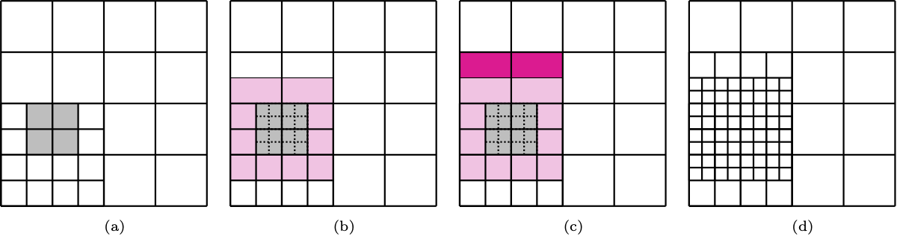
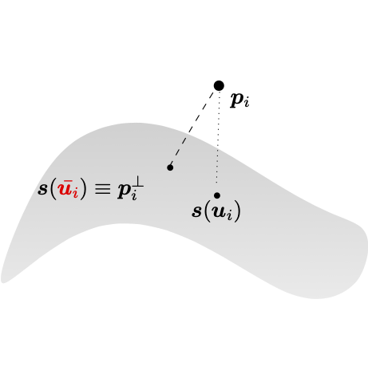

The spline data fitting problem can be mathematically described as follows.
Given a (noisy) data set of the form,
\begin{eqnarray*}
\mathrm{P} = \{\mathbf{p}_i\in\mathbb{R}^N \, \vert\, i = 0, \ldots, m-1\},
\end{eqnarray*}
where \(N=2\) for data points laying a plane and \(N=3\) for data points which belong to the three-dimensional space, find a spline model \(\mathbf{s}: \Omega\subseteq\mathbb{R}^D\to\mathbb{R}^N\), which approximates the data \(\mathrm{P}\) within a certain tolerance \(\epsilon\in\mathbb{R}_{>0}\), in the sense that, for each \(i=0, \ldots, m-1\),
\begin{eqnarray*}
\mathrm{dist}\left(\mathbf{s}_i, \mathbf{p}_i\right) \leq \epsilon,
\end{eqnarray*}
where \(\mathbf{s}_i\) denotes a point on the geometric model associated with the data point \(\mathbf{p}_i\), and \(\mathrm{dist}\left(\cdot,\cdot\right)\) is a certain distance metric.
Therefore, the (TH)B-spline fitting problem can be stated in the following way. Given a point cloud \(\mathrm{P}\) and an error tolerance \(\epsilon > 0\), find a (TH)B-spline model \(\mathbf{s}:\Omega\subseteq\mathbb{R}^D \to \mathbb{R}^N\), so that
\begin{eqnarray*}
\mathrm{dist}\left(\mathbf{s}(\mathbf{u}_i), \mathbf{p}_i\right) \leq \epsilon, \quad \text{with}\, \mathbf{u}_i\in\Omega, \quad \text{for each}\quad i=0, \ldots, m-1,
\end{eqnarray*}
where \(\mathbf{u}_i\) denotes a point on the parametric domain \(\Omega\) associated with the data point \(\mathbf{p}_i\).
Leveraging moving parameterization and adaptive THB-splines for CAD surface reconstruction
Given a point cloud \(\mathrm{P}= \{\mathbf{p}_i\in\mathbb{R}^3 \, \vert\, i = 0, \ldots, m-1\}\), its parametrization \(\mathrm{U} = \{\mathbf{u}_i\in\Omega\subset\mathbb{R}^2 \, \vert\, i = 0, \ldots, m-1\}\), once an initial parameter and mesh configuration is chosen, the adaptive (TH)B-spline fitting procedure is characterised by four main steps, which are successively repeated:
- (1) SOLVE: computation of the approximation on the current mesh,
- (2) ESTIMATE: error estimation,
- (3) MARK: marking the mesh elements with a too high error,
- (4) REFINE: refinement strategies to suitably identify the adaptive mesh to be used in the next iteration of the adaptive loop.
SOLVE
For a fixed THB-spline space \(V\), the first step of the adaptive loop consists in finding \(\mathbf{s}\in V\), that solves the penalized least squares problem
\begin{eqnarray*}
\mathbf{s} = \arg\min_{\mathbf{v}\in V}\frac{1}{2}\sum_{i=0}^{m-1}\left\| \mathbf{v}\left(\mathbf{u}_i\right) - \mathbf{p}_i\right\|_2^2 + \lambda J\left(\mathbf{v}\right),
\end{eqnarray*}
where the penalization term \(J\) is the thin-plate energy functional, whose influence is controlled by a weight \(\lambda \geq 0\), i.e. for \(\mathbf{u} = (u,v)\in\Omega\),
\begin{eqnarray*}
J\left(\mathbf{s}\right) = \int_{\Omega}\left\|\frac{\partial^2\mathbf{s}}{\partial u\partial u}\right\|_2^2 + 2\left\|\frac{\partial^2\mathbf{s}}{\partial u\partial v}\right\|_2^2 + \left\|\frac{\partial^2\mathbf{s}}{\partial v\partial v}\right\|_2^2 \mbox{d}u\mbox{d}v.
\end{eqnarray*}
ESTIMATE
Subsequently, the second step of the adaptive fitting loop consists of evaluating the THB-spline approximant on the parameter sites \(\mathbf{u}_i\in\Omega\) related to the data points \(\mathbf{p}_i\) to compute a suitable error indicator.
In particular, we choose the point-wise error distance \(\left\|\mathbf{s}(\mathbf{u}_i) - \mathbf{p}_i\right\|_2\) for each \(i=0, \ldots, m-1\), among others. The error indicator indicates the region of the domain \(\Omega\) where additional degrees of freedom are needed to meet the prescribed surface accuracy, by individuating the parametric sites \(\mathbf{u}_i \in U\) where it exceeds a certain input threshold, i.e.
\begin{eqnarray*}
\left\|\mathbf{s}(\mathbf{u}_i) - \mathbf{p}_i\right\|_2 \geq \epsilon.
\end{eqnarray*}
MARK & REFINE
Therefore, we identify the cells of the current hierarchical level which contain the parameters \(\mathbf{u}_i\) identified by the error indicator and mark them for refinement, together with ext surrounding rings of cells in the hierarchical mesh. Finally, the marked cells are dyadically split, according to the possible hierarchical configurations.

Marking and refinement of cells in the hierarchical mesh, with ext = 2 and bi-degree (2,2).
MOVING PARAMETERS
In the context of surface fitting, the parameters update within the described adaptive methodology is performed by adding a parameter correction (PC) routine, at the end of the standard adaptive loop. This method consists of locating the points on the geometric model which are the closest to the data points, in terms of Euclidean distance.
Given a point cloud \(P\), its parameterization \(U\) and a surface \(\mathbf{s}: \Omega\subset\mathbb{R}^2 \to \mathbb{R}^3\), the surface closest point problem consists in solving the following minimization problem,
\begin{eqnarray*}
\min_{\left(u_i, v_i\right)}\frac{1}{2}\left\|\mathbf{s}\left(u_i, v_i\right) - \mathbf{p}_i\right\|_2^2,\
\quad \text{for each}\ i=0,\ldots,m-1.
\end{eqnarray*}
This two-dimensional nonlinear problem can be explicitly formulated as
\begin{eqnarray*}
\left(\mathbf{s}\left(u_i, v_i\right) - \mathbf{p}_i\right)^{\top} \nabla \mathbf{s}\left(u_i, v_i\right) = 0
\end{eqnarray*}
for each \(i=0,\ldots, m-1\), where \(\nabla\mathbf{s}\) indicates the gradient of the surface \(\mathbf{s}\), and solved by employing a suitable optimizer.
The vector connecting the data point \(\mathbf{p}_i\) to the surface point \(\mathbf{s}(u_i, v_i)\) has to be orthogonal to the tangent plane of the surface and \(\mathbf{s}\left( {u}_i, {v}_i\right)\) is then usually called the foot-point of \(\mathbf{p}_i\) over \(\mathbf{s}\) for each \(i=0, \ldots, m-1\). The updated parameterization \(\bar{\mathbf{u}}_i = \left( \bar{u}_i, \bar{v}_i\right)\) is defined as the solution the minimization problem, for \(i=0,\ldots, m-1\). Note that after performing one step of PC, the geometric model can be updated by fitting again the surface \(\mathbf{s}\) to the points \(P\) with the corrected parameters. Consequently, a new projection and the corresponding correction can take place.

Parameter correction.
Leveraging moving parameterization and adaptive THB-splines in G+Smo
In this example, we show how to fit an adaptive THB-spline surface to an input 3D point cloud.
First we include the library and use the gismo namespace.
Main header to be included by clients using the G+Smo library.
The G+Smo namespace, containing all definitions for the library.
Then we define our command line options. For example, we use the options
-d or --data to set the path to the file that contains our parameterized point cloud;-e or --epsilon to set the error tolerance;-s or --lambda to set the weight of the thin-plate energy functional;-c or --parcor to set the number of parameter correction steps;-i or --iter to set the number of adaptive refinement loops;-p or --refPercent to set the percentage of points to refine in each iteration;- ...
gsCmdLine cmd(
"Fit parametrized sample data with a surface patch. Expected input file is an XML "
"file containing two matrices (<Matrix>), with \nMatrix id 0 : contains a 2 x N matrix. "
"Every column represents a (u,v) parametric coordinate\nMatrix id 1 : contains a "
"3 x N matrix. Every column represents a point (x,y,z) in space.");
cmd.addSwitch("save", "Save result in XML format", save);
cmd.addInt("c", "parcor", "Steps of parameter correction", maxPcIter);
cmd.addInt("i", "iter", "number of iterations", iter);
cmd.addInt("x", "deg_x", "degree in x direction", deg_x);
cmd.addInt("y", "deg_y", "degree in y direction", deg_y);
cmd.addReal("s", "lambda", "smoothing coefficient", lambda);
cmd.addReal("t", "threshold", "error threshold (special valule -1)", threshold);
cmd.addReal("p", "refPercent", "percentage of points to refine in each iteration", refPercent);
cmd.addInt("q", "extension", "extension size", extension);
cmd.addInt("r", "urefine", "initial uniform refinement steps", numURef);
cmd.addInt("n", "iknots", "number of interior knots in each direction", numKnots);
cmd.addInt("a", "uknots", "number of interior knots in u-direction", nx);
cmd.addInt("b", "vknots", "number of interior knots in v-direction", ny);
cmd.addReal("e", "tolerance", "error tolerance (desired upper bound for pointwise error)", tolerance);
cmd.addString("d", "data", "Input sample data", fn);
try { cmd.getValues(argc,argv); } catch (int rv) { return rv; }
Class for command-line argument parsing.
Definition gsCmdLine.h:57
Then we read the input from the file that contains the parametrized point cloud. In this example, we use the function gsFileData::getId() to read input from an xml file. In this function, the first argument specifies the ID of the object in the xml file (the id flag) and the second argument is the object to which the file info is written.
This class represents an XML data tree which can be read from or written to a (file) stream.
Definition gsFileData.h:34
A matrix with arbitrary coefficient type and fixed or dynamic size.
Definition gsMatrix.h:41
Set the initial mesh configuration and THB spline space,
if( nx < 0)
nx = numKnots;
if( ny < 0)
ny = numKnots;
T_tbasis.uniformRefine( (1<<numURef)-1 );
Class for representing a knot vector.
Definition gsKnotVector.h:80
Truncated hierarchical B-spline basis.
Definition gsTHBSplineBasis.h:36
A tensor product B-spline basis.
Definition gsTensorBSplineBasis.h:37
as well as the fitting object.
This class applies hierarchical fitting of parametrized point clouds.
Definition gsHFitting.h:35
Perform the adaptive loop:
for(int i = 0; i <= iter; i++)
{
gsInfo<<
"Iteration "<<i<<
".."<<
"\n";
time.restart();
ref.nextIteration(tolerance, threshold, maxPcIter);
time.stop();
gsInfo<<
"Fitting time: "<< time <<
"\n";
gsInfo<<
"Fitted with "<< ref.result()->basis() <<
"\n";
gsInfo<<
"Min distance : "<< ref.minPointError() <<
" / ";
gsInfo<<
"Max distance : "<< ref.maxPointError() <<
"\n";
gsInfo<<
"Points below tolerance: "<< 100.0 * ref.numPointsBelow(tolerance)/errors.size()<<
"%.\n";
if ( ref.maxPointError() < tolerance )
{
gsInfo<<
"Error tolerance achieved after "<<i<<
" iterations.\n";
break;
}
}
#define gsInfo
Definition gsDebug.h:43
Finally, export the results to ParaView.
if ( save )
{
gsInfo<<
"Done. Writing solution to file fitting_out.xml\n";
fd << *ref.result() ;
fd.dump("fitting_out");
}
else
gsInfo <<
"Done. No output created, re-run with --save to get a xml "
"file containing the solution.\n";
return 0;
Annotated source file
Here is the full file examples/fitting_example.cpp. Clicking on a function or class name will lead you to its reference documentation.
int main(int argc, char *argv[])
{
bool save = false;
real_t lambda = 1e-06;
real_t threshold = 1e-02;
real_t tolerance = 1e-02;
real_t refPercent = 0.1;
std::string fn = "fitting/deepdrawingC.xml";
gsCmdLine cmd(
"Fit parametrized sample data with a surface patch. Expected input file is an XML "
"file containing two matrices (<Matrix>), with \nMatrix id 0 : contains a 2 x N matrix. "
"Every column represents a (u,v) parametric coordinate\nMatrix id 1 : contains a "
"3 x N matrix. Every column represents a point (x,y,z) in space.");
cmd.addSwitch("save", "Save result in XML format", save);
cmd.addInt("c", "parcor", "Steps of parameter correction", maxPcIter);
cmd.addInt("i", "iter", "number of iterations", iter);
cmd.addInt("x", "deg_x", "degree in x direction", deg_x);
cmd.addInt("y", "deg_y", "degree in y direction", deg_y);
cmd.addReal("s", "lambda", "smoothing coefficient", lambda);
cmd.addReal("t", "threshold", "error threshold (special valule -1)", threshold);
cmd.addReal("p", "refPercent", "percentage of points to refine in each iteration", refPercent);
cmd.addInt("q", "extension", "extension size", extension);
cmd.addInt("r", "urefine", "initial uniform refinement steps", numURef);
cmd.addInt("n", "iknots", "number of interior knots in each direction", numKnots);
cmd.addInt("a", "uknots", "number of interior knots in u-direction", nx);
cmd.addInt("b", "vknots", "number of interior knots in v-direction", ny);
cmd.addReal("e", "tolerance", "error tolerance (desired upper bound for pointwise error)", tolerance);
cmd.addString("d", "data", "Input sample data", fn);
try { cmd.getValues(argc,argv); } catch (int rv) { return rv; }
if (deg_x < 1)
{
gsInfo <<
"Degree x must be positive.\n";
return 0;}
if (deg_y < 1)
{
gsInfo <<
"Degree y must be positive.\n";
return 0;}
if (extension < 0)
{
gsInfo <<
"Extension must be non negative.\n";
return 0;}
if ( tolerance < 0 )
{
gsInfo <<
"Error tolerance cannot be negative, setting it to default value.\n";
tolerance = 1e-02;
}
if (threshold > 0 && threshold > tolerance )
{
gsInfo <<
"Refinement threshold is over tolerance, setting it the same as tolerance.\n";
threshold = tolerance;
}
"Wrong input");
real_t u_min = uv.row(0).minCoeff(),
u_max = uv.row(0).maxCoeff(),
v_min = uv.row(1).minCoeff(),
v_max = uv.row(1).maxCoeff();
if( nx < 0)
nx = numKnots;
if( ny < 0)
ny = numKnots;
T_tbasis.uniformRefine( (1<<numURef)-1 );
std::vector<unsigned> ext;
ext.push_back(extension);
ext.push_back(extension);
const std::vector<real_t> & errors = ref.pointWiseErrors();
gsInfo<<
"Fitting "<< xyz.cols() <<
" samples.\n";
gsInfo<<
"Cell extension : "<< ext[0]<<
" "<<ext[1]<<
".\n";
if ( threshold >= 0.0 )
gsInfo<<
"Ref. threshold : "<< threshold<<
".\n";
else
gsInfo<<
"Cell refinement : "<< 100*refPercent<<
"%%.\n";
gsInfo<<
"Error tolerance : "<< tolerance<<
".\n";
gsInfo<<
"Smoothing parameter: "<< lambda<<
".\n";
for(int i = 0; i <= iter; i++)
{
gsInfo<<
"Iteration "<<i<<
".."<<
"\n";
ref.nextIteration(tolerance, threshold, maxPcIter);
gsInfo<<
"Fitting time: "<< time <<
"\n";
gsInfo<<
"Fitted with "<< ref.result()->basis() <<
"\n";
gsInfo<<
"Min distance : "<< ref.minPointError() <<
" / ";
gsInfo<<
"Max distance : "<< ref.maxPointError() <<
"\n";
gsInfo<<
"Points below tolerance: "<< 100.0 * ref.numPointsBelow(tolerance)/errors.size()<<
"%.\n";
if ( ref.maxPointError() < tolerance )
{
gsInfo<<
"Error tolerance achieved after "<<i<<
" iterations.\n";
break;
}
}
if ( save )
{
gsInfo<<
"Done. Writing solution to file fitting_out.xml\n";
fd << *ref.result() ;
fd.dump("fitting_out");
}
else
gsInfo <<
"Done. No output created, re-run with --save to get a xml "
"file containing the solution.\n";
return 0;
}
double stop()
Return elapsed time in seconds.
Definition gsStopwatch.h:83
void restart()
Start taking the time.
Definition gsStopwatch.h:80
#define index_t
Definition gsConfig.h:32
#define GISMO_ASSERT(cond, message)
Definition gsDebug.h:89